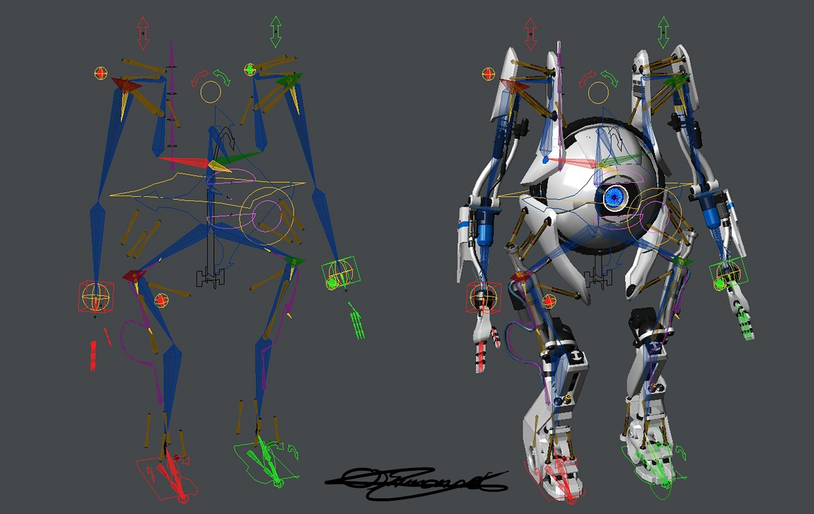

<!DOCTYPE html>
<html lang="en" dir="ltr">
  <head>
    <meta charset="utf-8">
    <title>ADSN-425</title>
  </head>
  <body>

  </body>
</html>
<head>
  <link rel="stylesheet" type="text/css" href="style.css">
</head>

<body>
  <div class="top">
    <p class="date">Oct 26</p>
    <p class="title">Final Project + Armatures</p>
    <p class="course">3D Graphics + Animation</p>
  </div>

  <div class="slide">
    <div class="content">
      <p class="big">Final Project + Armatures</p>
      <h2 class="centered">October 26, 2020</h2>
    </div>
  </div>

  <div class = "slide blue">
    <div class ="content alt">
      <h1>Agenda</h1>
      <ol>
        <li>Final Project – Intro + Part 1</li>
        <li>Animating (rigging) a noodle</li>
        <li>Rigging a character</li>
        <li>Inverse Kinematics</li>
        <li>Little Animation</li>
      </ol>
    </div>
  </div>

  <div class="slide">
  <div class="content">
    

  </div>

  <div class="slide">
    <div class="content">
      <h1>ADSN 425 – Final Project</h1>
      <p>For this project you will be designing a branded suite of visuals for a client. You will be given the option to choose what deliverables you wish to make.</p>
      <h1>DigitAlt Festival</h1>
      <p>DigitAlt's goal is to create a weekend that highlights the space in between traditional hand-crafted art techniques and new digital tools, seeking to find an alternative to our overwhelmingly digital world. DigitAlt offers talks and workshops with artists and musicians who work with both hi-tech digital tools and traditional, analog methods. This year, DigitAlt will be online only, making the contrast between computer space and real space more meaningful.</p>
      <p>Like the festival, your identity should seek to find an interesting blend between digital (hi-tech) and traditional methods/aesthetics. DigitAlt festival seeks to be approachable to a wide audience, not just artists. The identity should be approachable, but definitely have the feeling of being well-crafted. Playful but not cartoony. </p>
      <h2>Part 1 – Brand Pitch – Due Monday (11/2)</h2>
      <p>Prepare a 5 (or more) slide pitch deck that walks me through your proposal for the design direction you'd like to take the festival. This includes type choices, color palette choices, and a clear vision for the way(s) you plan on using 3D, animation, and any other imagery. </p>
      <ol>
        <li>a cover slide</li>
        <li>a slide that briefly (1-2 sentences) describes your approach conceptually</li>
        <li>a slide that shows your type and color choices</li>
        <li>a slide that shows your design applied to a static Instagram Ad – 1600 × 1600 pixels</li>
        <li>a style frame for an animated video intro used in the Lost Fest live streams</li>
      </ol>
    </div>

  </div>

  </div>

</body>
</html>
